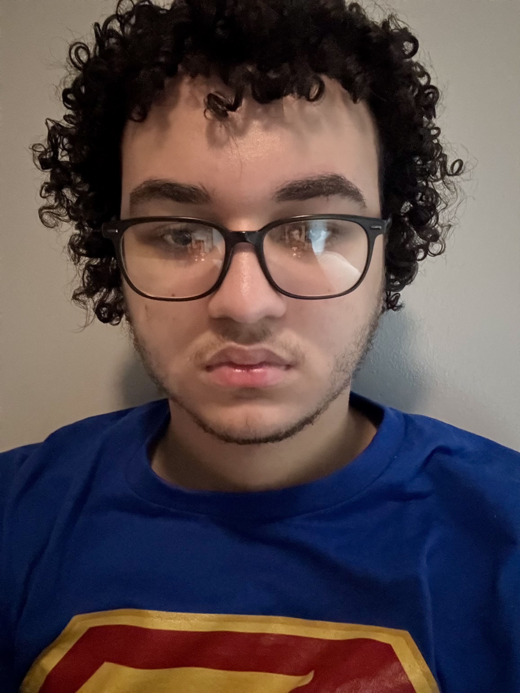

A lady is running from a serial killer in the woods. She trips and falls on a branch, catches the killer’s attention, and I yell, “CUT!” Something about the branch wasn’t right, and many takes have already been done, and none of them are right. So, instead of waiting, I simply go and make the prop myself. It’s perfect…down to the last minute detail. That person is who I strive to be, a Universal Director or Jack of All Trades. My goal is to understand the process, know the ins and outs behind each department that brings a story to life. I, too, seek to blend screen media and physical media, more in the world of comics and horror. I want to thrive in making life simple, yet amusing.
This is the second paragraph of my artist statement. And that’s where I’ll introduce myself and my purpose. The name is Joshua Gomez, and I’ve been alive for 20 years already, and I hope what I have in mind is my purpose. It’s been a lot of back and forth with what I’m doing with my life. At first, BOOM! Straight into the science field, but in reality, it was not for me. I didn’t need it, and it didn’t need me, trust. What truly ignited my interest was… creativity in realistic-fiction media. Creativity in that section of media is fascinating. I love the vision that goes into creating comics, the horror in movies, or animation that brings everything to life. I love the inspiration behind the work, the teams working together, the collaborative experience. But being known as the person who put a character on the map, for people to explore, really inspires me because it can be done with anyone. It’s like a never ending cycle of influence: when you have filmwriters like Matt Reeves, or Sam Raimi being influenced by writers in the comic field like Grant Morrison, or Scott Snyder, who then are inspired by someone like Alan Moore, who Stan Lee and Jack Kirby influenced. It’s truly amazing, and when different fields come together and work, you get a bigger masterpiece. We're all simply influenced by each other. It’s a web of influence where every creator pushes the others to new heights.
